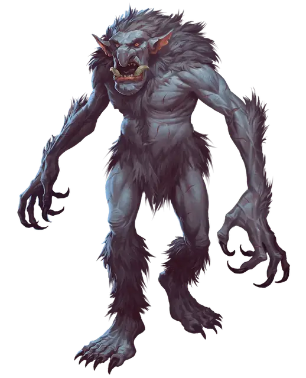

Ледяной тролль
Ice Troll
Большой Великан, хаотично-злой

Класс Доспеха 16 (природный доспех)
Хиты 115 (10к10 + 60)
Скорость 30 футов
| мод | спас | ||
|---|---|---|---|
| СИЛ | 18 | +4 | +4 |
| ЛОВ | 8 | −1 | −1 |
| ТЕЛ | 22 | +6 | +6 |
| мод | спас | ||
|---|---|---|---|
| ИНТ | 7 | −2 | −2 |
| МДР | 9 | −1 | −1 |
| ХАР | 7 | −2 | −2 |
Навыки Восприятие +2
Иммунитет к урону холод
Чувства тёмное зрение 60 футов, пассивное Восприятие 12
Языки Великаний
Опасность 8 (3900 опыта)
Бонус мастерства +3
Особенности
Аура холода. Пока тролль жив, его окутывает аура сильного холода, заполняющая область в пределах 10 футов от него. В начале хода тролля все немагические источники огня в пределах действия ауры тухнут. Любое существо, начинающее свой ход в пределах 10 футов от тролля, получает 10 (3к6) урона холодом.
Тонкий нюх. Тролль совершает с преимуществом проверки Мудрости (Восприятие), полагающиеся на обоняние.
Регенерация. Тролль восстанавливает 10 хитов в начале своего хода. Если тролль получает урон кислотой или огнём, эта особенность не действует в начале его следующего хода. Тролль умирает только если начинает ход с 0 хитов и не может регенерировать.
Действия
Мультиатака. Тролль совершает три атаки: одну укусом и две когтями.
Укус. Рукопашная атака оружием: +7 к попаданию, досягаемость 5 фт., одна цель. Попадание: 7 (1к6 + 4) колющего урона плюс 9 (2к8) урона холодом.
Коготь. Рукопашная атака оружием: +7 к попаданию, досягаемость 5 фт., одна цель. Попадание: 11 (2к6 + 4) рубящего урона плюс 9 (2к8) урона холодом. Если цель получает любое количество урона холодом, то она должна преуспеть в спасброске Телосложения Сл 15, иначе будет совершать с помехой все броски атаки до конца её следующего хода.
Описание
Ледяные тролли по части мерзкого нрава и постоянного голода мало чем отличаются от обычных троллей. Их сердца излучают экстремальный холод, принося вред окружающим существам.
Сердца ледяных троллей. Сердце ледяного тролля остается холодным даже после смерти хозяина. Когда тролль не сможет регенерировать, его сердце можно извлечь из останков, обработать и сохранить. После удаления из тела сердце ледяного тролля становится безобидным Крошечным объектом с КД 13, 4 хитами и иммунитетом к любому виду урона, кроме урона огнём. В течение следующих 24 часов сердце обладает следующими магическими свойствами:
- Существо, съевшее сердце получает способность регенерировать в течение следующих 24 часов, восстанавливая 5 хитов в начале каждого своего хода. Если существо получает урон кислотой или огнём, эта черта в начале его следующего хода не действует. Существо умирает, только если начинает свой ход с 0 хитами и не регенерирует.
- Если сердце зарыть в землю на глубину в 1 фут и больше, оно начинает таять и вызывает метель, подобную той, что создается при помощи заклинания власть над погодой [control weather]. Таяние сердца занимает 10 минут, после чего появляется метель. Она длится 8 часов.
- Карга или подобное ей существо может исполнить ритуал, превращающий сердце в магический талисман, действующий как участок коричневой плесени. Эффект действует до тех пор, пока сердце не уничтожено.
- Существо, имеющее владение инструментами алхимика, может выжать из сердца немного остаточной жидкости, чтобы смешать ее с другими алхимическими ингредиентами и создать одно зелье сопротивления [potion of resistance] (холод). Создание этого зелья занимает 1 час.